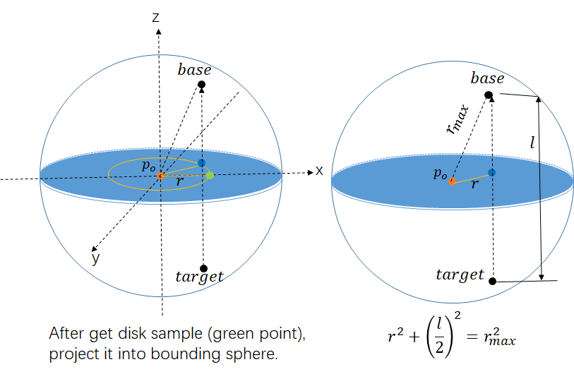

I've been implementing a simple energy conserving path tracer and wanted to add subsurface scattering to it but I didn't find any tutorials for it. If you want to implement a simple, physically based SSS into your path tracer, I hope I can help.
In SSS, light enters a point on a surface, then re-emerged at a point that may or may not be where it first entered. Looking at the rendering equation:
$$ L_o(p_o, \omega_o) = \int_{\Omega} f_r(p_o, \omega_i, \omega_o) L_i(p_o, \omega_i) (\omega_i \cdot n_i) d\omega_i $$
The monte carlo estimator is:
$$ L_o(p_o, \omega_o) \approx \frac{1}{N}\sum_{i=1}^{N}{\frac{f_r(p_o, \omega_i, \omega_o) L_i(p_o, \omega_i) (\omega_i \cdot n_i)}{p(\omega_i)}} $$
We can see that it only supports light entering and exiting at one point. Therefore we to use the BSSRDF:
$$ L_o(p_o, \omega_o) = \int_A \int_{\Omega} S(p_o, \omega_o, p_i, \omega_i) L_i(p_o, \omega_i) (\omega_i \cdot n_i) d\omega_i dA $$
As you can see, not only do we have a hemisphere around our point but we must also consider the area surrounding it.
Of course the integral in this form is quite difficult to evaluate. Luckily in 2001, Jensen et al proposed a more manageable form of the BSSRDF term called the separable BSSRDF:
$$ S(p_o, \omega_o, p_i, \omega_i) = (1 - F(\omega_o)) S_p(p_o, p_i) S_\omega(\omega_i) $$
Therefore the rendering equation becomes:
$$ L_o(p_o, \omega_o) = (1 - F(\omega_o))\int_{A} S_p(p_o, p_i) \int_{\Omega}S_{\omega}(\omega_i)(\omega_i \cdot n_i) d\omega_idA $$
Then the monte carlo estimator is:
$$ L_o(p_o, \omega_o) \approx (1 - F(\omega_o))\frac{1}{N}\sum_{i=1}^{N}{\frac{ L_i(p_o, \omega_i) S_p(p_o, p_i) S_\omega(\omega_i) (\omega_i \cdot n_i)}{p(\omega_i)p(p_i)}} $$
I will now explain how to integrate each term into your Monte Carlo path tracer.
This term essentially accounts for whether the light actually enters the surface and scatters. So it is actually just your BSDF's chance of transmission with \(\omega_o\). If its true, we evaulate the BSSRDF.
If you dont have a full BSDF system, draw a random number uniformly \(u_1 \in [0, 1]\) and test \(u_1 < 1 - F(\omega_o)\). If it fails, simply fall back to something like a reflection lobe. Otherwise we evaulate the BSSRDF.
This term accounts for the energy loss when the ray exits the surface. Here is the function (from pbrt 11.7):
$$ S_\omega(\omega_i) = \frac{1 - F_r(\cos \theta_i)}{c \pi} $$
where
$$ c = 1 - 2 \int_0^{\frac{\pi}{2}} F_r(\eta, \cos \theta) \sin \theta \cos \theta \, d\theta $$
This integral can be precomputed using this function:
__device__ inline float FresnelMoment1(float invEta)
{
float e = invEta;
float e2 = e * e, e3 = e2 * e, e4 = e2 * e2, e5 = e3 * e2;
if (e < 1.0f)
return 0.45966f - 1.73965f * e + 3.37668f * e2 - 3.904945f * e3 + 2.49277f * e4 - 0.68441f * e5;
else
return -4.61686f + 11.1136f * e - 10.4646f * e2 + 5.11455f * e3 - 1.27198f * e4 + 0.12746f * e5;
}
Please refer to pbrt 11.4.3 for derivation.
This term is the spatial term and accounts for energy when the light scatters under the surface. We make the simplifying assumption:
$$ S_p(p_o, p_i) \approx S_r(\|p_o - p_i\|) $$
So that the only factor affecting this term is the distance between the entrance and exit of the light. There are different variations of diffusion profiles, which generally are functions that approximate \(S_p\). I decided to use this one described by Disney.:
$$ S_r(\|p_o - p_i\|) \approx R'(r) = s \frac{e^{-sr/\ell} + e^{-sr/(3\ell)}}{8 \pi \ell r} $$
$$ \int_{0}^{2\pi}\int_{0}^{\infty}{rR'(r) drd \phi} = 1 $$
Since we want to express it with meaningful physical properties, Disney gave it some params:
$$ R(r) = A s \frac{e^{-sr/\ell} + e^{-sr/(3\ell)}}{8 \pi \ell r} $$
Here \(r\) is the distance from the entrance and exit points.
\(\ell\) is the user controlled mean free path which essentially is the average distance the light ray travels between scattering events in the medium.
\(A\) in the diffusion profile represents our user defined material albedo.
$$ \rho_{eff} = \int_{0}^{2\pi}\int_{0}^{\infty}{rS_r(r) drd \phi} $$
Where \(S_r(r)\) is the diffusion profile. For Burley's profile:
$$ \rho_{eff} = \int_{0}^{2\pi}\int_{0}^{\infty}{rR(r) drd \phi} = \int_{0}^{2\pi}\int_{0}^{\infty}{rAR'(r) drd \phi} = A\int_{0}^{2\pi}\int_{0}^{\infty}{rR'(r) drd \phi} $$
Since \(R'(r)\) is normalized:
$$ \int_{0}^{2\pi}\int_{0}^{\infty}{rR'(r) drd \phi} = 1 $$
So it follows that:
$$ \rho_{eff} = A $$
Essentially what this means is that whatever you set \(A\) to, the materials effective albedo will be exactly that, which is good for artists.
Finally, \(s\) is the shape parameter, defined as
$$ s = 1.85 - A_{channel} + 7|A_{channel} - 0.8|^3 $$
\(A_{channel}\) is the rgb channel that is randomly selected when sampling. More info on this in the next section.
Importance Sampling
The next question is, how do we decide our enter and exit points \(p_i\), \(p_o\) to evaluate the separable BSSRDF? We need to use importance sampling. Essentially I will describe a simplified version of the disk sampling described in pbrt 15.4.
So let's say you shoot a ray into the scene, it intersects a surface and passes the \((1 - F(\omega_o))\) test, meaning it has entered the surface
- Get the point of intersection and its normal. That is your \(p_o\).
- Choose a random axis on the orthonormal basis with chance \(T:0.25, B:0.25, N:0.5\) (let's call it \(n_{axis}\)). Randomly choose an rgb channel uniformly.
- Draw a sphere at that point that encapsulates 99.9% of the energy of the diffusion profile.
Everything outside of it is negligible.
Explanation on how to get radius of this sphere in upcoming section.
- Create a disk that is tangent to \(n_{axis}\) and has the radius which is the same as the max energy sphere.
- Choose a point on that disk based on the diffusion profile's CDF.
I’ll explain how to sample the diffusion profile’s CDF in the upcoming section.
- Cast a probe ray at that point, parallel to the \(n_{axis}\), whose length reaches the size of the sphere.
- Gather every intersection in a linked list, and remove any that are not apart of the model. (For example, a wall near the model.)
- Uniformly choose a random intersection point. Get the normal and position of that intersection. That is your \(p_i\).
- Sample from a diffuse lobe at \(p_i\) to get the incoming direction \(w_i\).
Sampling on a Disk with Burley's Diffusion Profile
Previously I mentioned we must choose a point on that disk based on the diffusion profile's CDF. This is the importance sampling part. Essentially, we want to pick points on the disk that give the most contribution to our evaluation of \(R(r)\).
Burley provided us with a perfect CDF in the paper:
$$ \text{CDF}(r) = 1 - \frac{1}{4} e^{-r/d} - \frac{3}{4} e^{-r/(3d)} $$
Although the original paper claims this CDF is not analytically invertible, Zero Radiance in 2019 proved it in fact was:
$$ x = sr = 3 \log\left(\frac{1 + G(u)^{-1/3} + G(u)^{1/3}}{4u}\right), $$
$$ G(u) = 1 + 4u\left(2u + \sqrt{1 + 4u^2}\right) $$
So here is the code that gives you a radial distance on the disk based on that inverse CDF (directly from Zero Radiance's Blog):
__device__ inline void SampleBurleyRadius(float u, float rcpS, float& r, float& rcpPdf)
{
const float LOG2_E = 1.44269504089f;
u = 1.0f - u;
float g = 1.0f + (4.0f * u) * (2.0f * u + sqrtf(1.0f + (4.0f * u) * u));
float n = exp2f(log2f(g) * (-1.0f / 3.0f));
float p = (g * n) * n;
float c = 1.0f + p + n;
float x = (3.0f / LOG2_E) * log2f(c / (4.0f * u));
float rcpExp = ((c * c) * c) / ((4.0f * u) * ((c * c) + (4.0f * u) * (4.0f * u)));
r = x * rcpS;
rcpPdf = (8.0f * pi * rcpS) * rcpExp;
}
Again, I'm using the luminance approximation to calculate s. Please note that the above code
assumes \(\ell = 1\). To convert it to take in any \(\ell\), simply multiply:
r *= ell;
Even though this function also nicely provides a PDF, we won't use it so we can use our own for clarity. But by all means, if you don't mind, you can use the one returned by the function.
Once you have that radial distance \(r\), draw a random \(\phi \in [0, 2\pi]\) uniformly for the azimuthal angle on the disk. You have now successfully sampled a point on the disk in polar coordinates \(p(r, \phi)\).
You can convert this into a tangent space vector as: \[ p_{offset} = r (\cos(\phi)\, \mathbf{T} + \sin(\phi)\, \mathbf{B}) \] where \(\mathbf{T}\) and \(\mathbf{B}\) are the tangent and bitangent vectors of the disk's plane.
Creating the Energy Sphere
To create a sphere with radius \(r\) that encapsulates 99.9% of the energy of \(R(r)\), we can simply sample the above mentioned routine with \(u = 0.999\).
Creating the Probe Ray
As mentioned previously, we want to probe our scene based on the point on our disk. This ray will have length:
$$ l = 2\sqrt{r_{max}^2 - r^2} $$
This is essentially the length of the point on our disk projected onto the top and bottom of our energy sphere. The direction of this ray will be the direction of your orthonormal basis' normal, \(n_{axis}\).
The position of the ray will therefore be:
$$ p_{ray} = p_o + p_{offset} - n_{axis}(\frac{l}{2}) $$
This is much easier to visualize, so heres a very nice illustration courtesy of Duan Gao :
The bottom black dot (labelled "target") is \(p_{ray}\), the orange dot is \(p_o\), and the blue dot is \(p_{offset}\). Hopefully it is clear why we need the \(n_{axis}(\frac{l}{2})\) term for \(p_{ray}\). (It moves it down to the edge of the sphere.)
Getting The Exit Direction \(\omega_i\)
Once we have our entrance point \(p_i\), we can decide the direction on it by simply sampling a lambertian lobe at \(p_i\). Make sure to save the pdf as this is actually \(p(\omega_i)\) described in our estimator.
Resolving PDFs \(p(\omega_i)\) and \(p(p_i)\)
Recall our monte carlo estimator:
$$ L_o(p_o, \omega_o) \approx (1 - F(\omega_o))\frac{1}{N}\sum_{i=1}^{N}{\frac{ L_i(p_o, \omega_i) S_p(p_o, p_i) S_\omega(\omega_i) (\omega_i \cdot n_i)}{p(\omega_i)p(p_i)}} $$
We need to find the correct PDFs now; \(p(p_i)\) to account for picking our entrance point, and \(p(\omega_i\)) to account the incoming lights direction.
As discussed earlier, \(p(\omega_i\)) is exactly the pdf for a lambertian sample:
$$ p(\omega_i) = \frac{cos(\theta_i)}{\pi} $$
To account for picking the entrance point \(p_i\), we can observe that the diffusion profile \(R(r)\) gives the energy when exiting at distance \(r\), and importance sampling points proportional to that energy makes the pdf just the normalized diffusion profile:
$$ p(p_i) = s \frac{e^{-sr/\ell} + e^{-sr/(3\ell)}}{8 \pi \ell r} $$
$$ p(p_i) = \frac{R(r)}{\int_{0}^{2\pi} \int_{0}^{\infty}rR(r)drd\phi} $$
Since the diffusion profile is normalized:
$$ \int_{0}^{2\pi}\int_{0}^{\infty}{rR'(r) drd \phi} = 1 $$
Therefore:
$$ \int_{0}^{2\pi} \int_{0}^{\infty}rR(r)drd\phi = \int_{0}^{2\pi} \int_{0}^{\infty}rAR'(r)drd\phi = A\int_{0}^{2\pi} \int_{0}^{\infty}rR'(r)drd\phi = A $$
Plug it back in:
$$ p(p_i) = \frac{R(r)}{A} = \frac{AR'(r)}{A} = R'(r) $$
Conclusion
Hopefully now you know how to calculate each piece of the Monte Carlo estimator:
$$ L_o(p_o, \omega_o) \approx (1 - F(\omega_o))\frac{1}{N}\sum_{i=1}^{N}{\frac{ L_i(p_o, \omega_i) S_p(p_o, p_i) S_\omega(\omega_i) (\omega_i \cdot n_i)}{p(\omega_i)p(p_i)}} $$